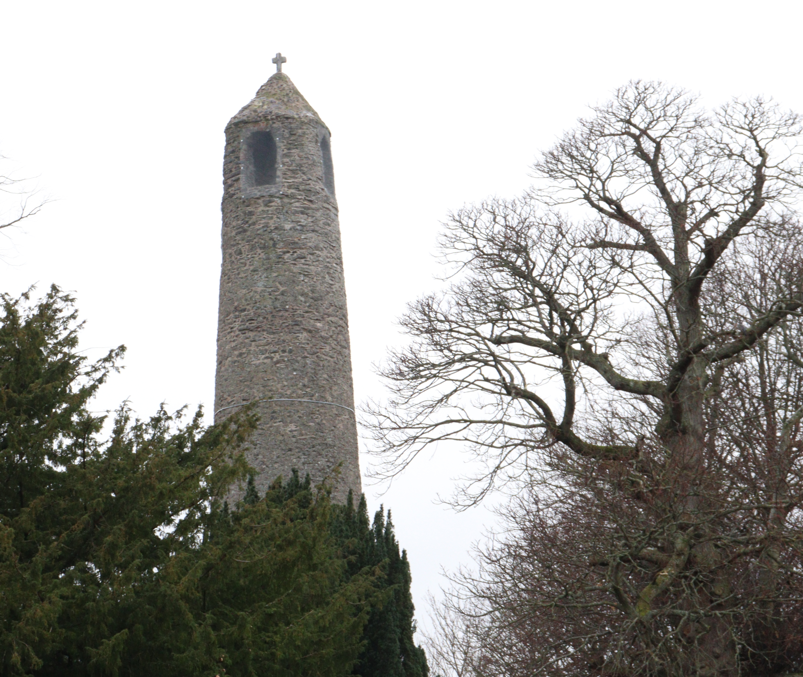

Review
“The Swords Round Tower has stood since the 6th century and it looks very old. We were disappointed that we couldn't climb the Round Tower, but that is not possible. The view of the town must be amazing. It's still worth the walk to see.”